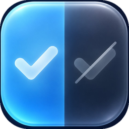

dsh-workspace-skill-scope
按工作区控制会话能看到哪些 skill · Per-workspace skill visibility
每个工作区一份 .dsh/skill-scope.yml，会话行菜单里勾选。对所有 preset 生效——标准 / PTC /
极简 / 创造，也包括插件安装之前就存在的老会话。
安装
dsh plugin --profile <profile> add github:versot/dsh-workspace-skill-scope重启 DSH 后，会话行「⋯」里出现「工作区 Skill…」。
配置
# <工作区>/.dsh/skill-scope.yml
projectSkills: true # 工作区 .dsh/skills、.agents/skills
userSkills: false # ~/.dsh/skills、~/.agents/skills
bundled: true # DSH 自带 skill
allow: [] # 非空 = 白名单
deny: [] # 精确排除
include: [] # 整组关掉时仍保留的名字文件不存在 = 与标准模式一致，全部可用。改完即时生效，不用重启。
怎么做的
- Host 行提供面板的 JSON 接口，并包一层共享
skills服务做过滤； - 所以老会话、其他模式都跟着工作区走；
- 过滤失败一律 fail-open，不会把会话搞成零 skill。